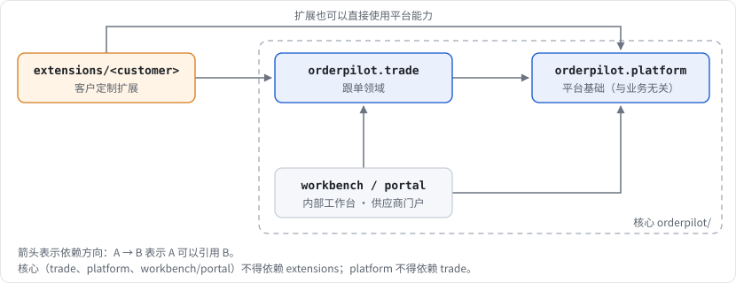
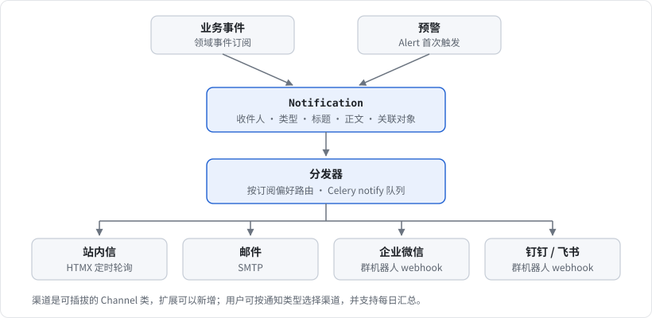
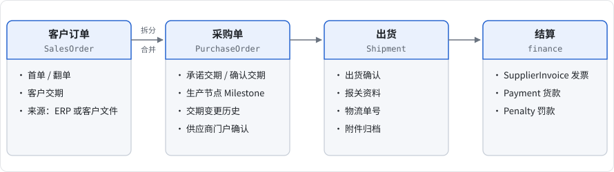
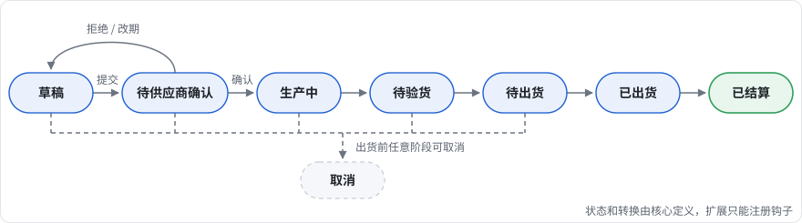
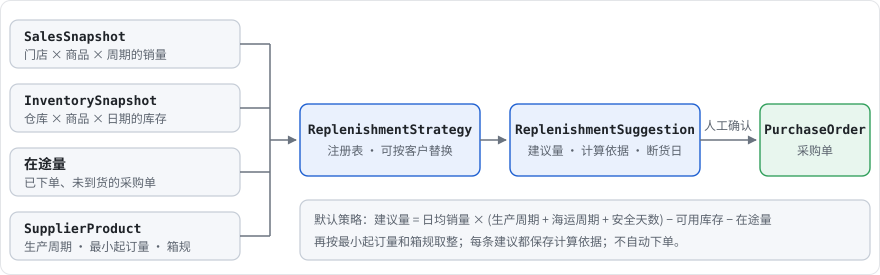
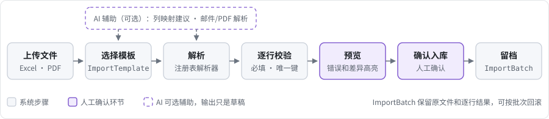
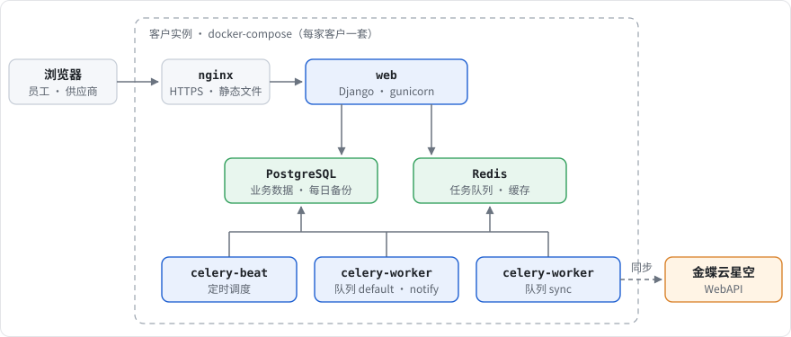

OrderPilot 架构设计
面向中小跨境/外贸公司的轻量智能跟单工作台
1定位与设计原则
1.1 产品定位
OrderPilot 是辅助工作台，不是ERP。典型客户规模是内部 15–20 名员工，外加几十家外部供应商。覆盖的业务：
- 补货备货：根据客户门店销量、海外仓库存和供应商生产周期，提前向供应商下单
- 订单跟进：采购单交期确认、生产节点跟踪、异常预警
- 出货：出货计划、工厂出货确认、报关资料、物流对接
- 结算：供应商发票、货款、罚款
- 商品生命周期：首单、翻单、废番
- 数据：自动汇总、生成报表
1.2 设计原则
- 权威来源划分清楚。ERP 是财务和主数据的权威来源，OrderPilot 是跟单过程数据的权威来源。每类实体只有一个权威来源，另一方只读或只做同步副本（见 §6.3）。
- 核心和定制分离。核心只放"跟单领域通用"的逻辑，客户差异一律通过扩展点注入。客户项目禁止修改核心代码；需要新的扩展点时，先在核心里加扩展点，再在扩展里实现。
- 先纵向跑通，再抽象。先用一个真实场景（对日跟单）走完一条完整流程，再把确认稳定的部分提炼进核心。
- 通用基础直接用成熟库。权限、异步、审计这些能力直接用 Django 生态的成熟方案，把精力留给领域逻辑。
- 一个人也能维护。架构复杂度要和团队规模匹配：单体应用，服务端渲染，不拆微服务，不做前后端分离。
2部署模式
每家客户独立部署：一套核心代码，每家客户一个扩展 app，数据库和服务器都是独立的。
| 考量 | 选择理由 |
|---|---|
| 定制深度 | 每家客户的流程、ERP、单据格式差异大，独立部署可以做到任意深度的定制 |
| 数据隔离 | 外贸公司很在意客户和供应商数据，物理隔离最容易取得客户信任 |
| 升级节奏 | 每家客户可以独立决定何时升级核心版本 |
| 代价 | 运维实例数随客户数线性增长，需要标准化的部署模板和升级脚本来控制（见 §10） |
给多租户留的余地：核心代码不假设"全局只有一家公司"，组织信息统一放在 Organization 配置里，不在代码里硬编码。这样以后需要时可以迁移到 django-tenants 的 schema 隔离方案。
3代码组织
OrderPilot/
├── config/
│ ├── settings/
│ │ ├── base.py
│ │ ├── dev.py
│ │ └── prod.py
│ ├── celery.py
│ └── urls.py
├── orderpilot/ # 核心（以后可以拆成可安装包）
│ ├── platform/ # 平台基础，和业务无关
│ │ ├── accounts/ # 自定义 User、组织、角色、供应商外部用户
│ │ ├── audit/ # 操作日志，统一接入变更历史
│ │ ├── notifications/ # 通知中心、渠道分发、订阅偏好
│ │ ├── attachments/ # 附件归档
│ │ ├── integrations/ # ERP 连接器抽象、同步任务、外部 ID 映射
│ │ ├── importer/ # Excel/单据导入映射引擎
│ │ ├── alerts/ # 预警规则引擎
│ │ ├── workflow/ # 状态机基础、领域事件
│ │ ├── extensions/ # 扩展加载器和注册表
│ │ └── ai/ # LLM 辅助（可选模块）
│ ├── trade/ # 跟单领域
│ │ ├── masterdata/ # 商品(品番/JAN/废番)、客户、门店、仓库、供应商
│ │ ├── sales/ # 客户订单（首单/翻单）
│ │ ├── purchasing/ # 采购单、交期承诺、生产节点
│ │ ├── shipping/ # 出货计划、出货确认、报关、物流
│ │ ├── finance/ # 供应商发票、货款、罚款
│ │ └── replenishment/ # 销量/库存快照、补货建议
│ ├── workbench/ # 内部工作台界面（看板、列表、报表）
│ └── portal/ # 供应商门户界面
├── extensions/
│ └── <customer_code>/ # 客户定制 app
├── deploy/ # docker-compose、nginx、备份脚本模板
├── docs/
└── tests/依赖方向（必须遵守）：

platform不依赖trade；- 核心任何代码都不依赖
extensions； - 扩展只能通过 §4 定义的扩展点影响核心行为。
扩展由配置选择：
# config/settings/base.py
ORDERPILOT_EXTENSION = env("ORDERPILOT_EXTENSION", default=None) # 例如 "extensions.acme"
if ORDERPILOT_EXTENSION:
INSTALLED_APPS.append(ORDERPILOT_EXTENSION)初期所有扩展都放在同一个仓库里，方便核心和扩展一起重构。等核心 API 稳定后，再把核心发布成私有包，每家客户一个部署仓库（orderpilot-<customer>），依赖一个固定的核心版本。
4扩展机制
这是整个架构的关键：客户差异必须通过扩展点实现，不能通过修改核心实现。
| 扩展点 | 机制 | 典型用法 |
|---|---|---|
| 扩展字段 | 核心模型带 extra = JSONField(default=dict)；FieldDefinition 表描述字段（JSON Schema），负责校验和表单、列表渲染 | 客户特有的商品属性、订单备注字段 |
| ERP 适配器 | ERPAdapter 抽象类，由 settings 指定实现类 | 金蝶云星空、用友、Excel 兜底 |
| 策略类 | 注册表模式，扩展可以覆盖同名实现 | 补货算法、预警规则、导入解析器、单据编号规则、罚款计算 |
| 业务事件 | 领域事件（基于 Django signals 做一层封装），扩展订阅 | 采购单确认后同步 ERP，出货后通知客户 |
| 状态机钩子 | 核心定义标准状态和转换，扩展注册转换前校验和转换后副作用 | "出货前必须上传验货报告" |
| 配置数据 | 存在数据库里，通过 Admin 维护 | 导入模板、报表模板、预警阈值、通知订阅 |
| 界面 | 模板覆盖（扩展 app 排在 INSTALLED_APPS 前面）加上预留的模板插槽 | 客户特有的看板卡片 |
4.1 注册表示意
# orderpilot/platform/extensions/registry.py
class Registry:
def __init__(self, name):
self.name, self._items = name, {}
def register(self, key, *, override=False):
def deco(obj):
if key in self._items and not override:
raise ImproperlyConfigured(f"{self.name}: '{key}' 已注册")
self._items[key] = obj
return obj
return deco
def get(self, key):
return self._items[key]
replenishment_strategies = Registry("replenishment")
alert_evaluators = Registry("alerts")
import_parsers = Registry("importer")# extensions/acme/replenishment.py
@replenishment_strategies.register("default", override=True)
class AcmeStrategy(BaseReplenishmentStrategy):
"""该客户按门店周销量 × 安全周数计算，并按箱规取整"""扩展 app 在 AppConfig.ready() 里导入自己的注册模块。核心在启动时检查：必需的扩展点都已经有实现。
4.2 领域事件示意
# 核心：发布
events.publish("purchasing.po_confirmed", po=po, by=user)
# 扩展：订阅
@events.subscribe("purchasing.po_confirmed")
def push_to_erp(po, **kw):
sync_po_to_erp.delay(po.pk) # 副作用一律异步处理，不阻塞主事务事件在事务提交之后再分发（用 transaction.on_commit），防止事务回滚了，副作用却已经执行。
5平台基础模块
5.1 用户和权限
- 从第一天就用自定义 User（
AUTH_USER_MODEL = "accounts.User"），之后再改代价很高。
class User(AbstractUser):
user_type = models.CharField(choices=[("internal", "内部"), ("supplier", "供应商")])
supplier = models.ForeignKey("masterdata.Supplier", null=True, blank=True, on_delete=models.PROTECT)
language = models.CharField(default="zh-hans")权限分三层：
| 层级 | 方案 | 例子 |
|---|---|---|
| 功能权限 | Django 自带的用户组和权限 | "跟单员"组可以编辑采购单，"财务"组可以确认罚款 |
| 规则权限 | django-rules 谓词 | 只有负责人或主管可以修改这张采购单的交期 |
| 行级隔离 | ScopedQuerySet.for_user(user) | 供应商只能看到自己的采购单、出货单和发票 |
行级隔离是安全底线：
- 所有带供应商归属的模型都继承
SupplierScopedModel，并实现for_user()； - 门户视图的基类强制使用
for_user()； - 测试里对每个门户接口做"跨供应商访问必须返回 404"的断言。
内部员工可以按"负责供应商 / 负责客户"分配数据范围。第一版只做"全部可见 + 我负责的"筛选，不做内部员工之间的数据隔离。
5.2 异步任务
- Celery + Redis 作为 broker；结果不依赖 Redis 持久化，关键结果写入数据库。
- 定时任务：
django-celery-beat，调度配置可以在 Admin 里调整。 - 规范：
- 任务必须幂等，参数只传主键，不传对象；
- 长任务写
TaskRun（状态、进度、错误信息），界面可以查看； - 失败的任务自动重试（退避），最终失败时通知管理员；
- 队列至少分为
default、sync（ERP 同步）、notify三个，防止 ERP 同步变慢时堵住通知。
- 典型定时任务：ERP 增量同步、预警扫描、每日报表、交期临近提醒。
5.3 通知

- 渠道是可插拔的
Channel类，客户可以在扩展里新增渠道； - 用户可以设置"哪类通知走哪个渠道"，并支持每日汇总，避免消息轰炸；
- 站内信实时性第一版用轮询（HTMX 定时刷新），以后再评估 Django Channels。
5.4 审计
- 关键单据（采购单、出货单、发票、罚款）用
django-simple-history记录每次字段变更； - 登录、导出、权限变更、状态转换写入
AuditLog； - 交期变更要保留历史，这是和供应商对账、判定罚款的依据。
5.5 附件
- 统一的
Attachment模型，通过 GenericForeignKey 挂到任意单据；带分类（发票、装箱单、报关单、验货报告等）； - 存储用
django-storages，可以在本地磁盘和 S3/阿里云 OSS 之间切换； - 下载时经过权限校验，不直接暴露存储地址。
6领域模型
6.1 主数据
| 模型 | 关键字段 | 说明 |
|---|---|---|
Product | 品番 part_no、JAN 码、名称（中/日）、箱规、状态（在售/废番）、默认供应商 | 废番后禁止生成新采购单，已下的订单继续跟踪 |
Customer | 名称、币种、结算条款 | 日本客户 |
Store | 所属客户、门店编号 | 销量数据的维度 |
Warehouse | 类型（日本仓/国内仓）、地址 | 库存数据的维度 |
Supplier | 名称、联系人、标准生产周期、结算条款 | 可以关联多个门户账号 |
SupplierProduct | 供应商、商品、采购价、生产周期、最小起订量 | 同一个商品可能有多家供应商 |
所有主数据都通过 ExternalRef(content_type, object_id, system, external_id) 关联 ERP 里的 ID，不在业务模型上直接加 kingdee_id 这种字段。
6.2 单据流转

采购单标准状态机（核心定义，扩展只能加钩子）：

- 状态转换统一通过
workflow模块执行，自动写审计记录、发布领域事件； - 状态机实现可以选用
viewflow.fsm或者一个轻量的自研实现（转换表加钩子）。不做可视化或可配置的流程引擎，等有第二家客户验证需求后再考虑。
6.3 权威来源划分
| 数据 | 权威来源 | OrderPilot 中的角色 |
|---|---|---|
| 商品、客户、供应商主数据 | ERP | 同步副本加扩展字段；本地补充的属性（日文名、箱规等）存在 extra |
| 客户订单 | ERP 或客户文件 | 导入或同步后在本地跟踪 |
| 采购单 | OrderPilot 创建 → 推送 ERP | 跟单过程（交期、节点、异常）以 OrderPilot 为准 |
| 生产节点、交期变更 | OrderPilot | ERP 里没有这类数据 |
| 出货确认、报关资料、物流 | OrderPilot | 出库单据可以回写 ERP |
| 发票、付款 | ERP | 同步回来用于对账展示；供应商通过门户上传发票附件 |
| 罚款 | OrderPilot 计算、审批 → 推送 ERP | 依据交期变更历史和规则计算 |
| 门店销量、日本仓库存 | 客户文件或客户系统 | 以快照形式导入 |
同步发生冲突时，以该实体的权威来源为准，被覆盖的一方写入同步日志。
6.4 补货

- 默认策略：
建议量 = 预测日均销量 × (生产周期 + 海运周期 + 安全天数) − 可用库存 − 在途量，再按最小起订量和箱规取整； - 每条建议都保存计算依据（输入快照加中间值），方便解释和复盘；
- 不自动下单：建议必须经人确认才生成采购单。
6.5 预警
AlertRule：类型（对应注册表里的 evaluator）、参数（JSON）、严重级别、接收人或角色、是否启用；Alert：规则、关联对象、去重键、状态（open / ack / resolved）、首次和最近触发时间；- 由定时任务扫描，也可以由事件触发；同一个去重键在 open 期间不重复通知。
- 内置规则：
- 交期临近但供应商未确认；
- 确认交期晚于客户交期；
- 生产节点逾期；
- 预计断货日早于到货日；
- 出货资料不齐；
- 发票金额与采购单不符；
- 废番商品仍有未完成的采购单。
7ERP 集成
7.1 适配器接口
class ERPAdapter(ABC):
system: str # "kingdee_cloud", "excel", ...
# 拉取（增量，since 为上次同步的水位线）
def pull_products(self, since) -> Iterable[ProductDTO]: ...
def pull_partners(self, since) -> Iterable[PartnerDTO]: ...
def pull_sales_orders(self, since) -> Iterable[SalesOrderDTO]: ...
def pull_inventory(self, as_of) -> Iterable[InventoryDTO]: ...
def pull_invoices(self, since) -> Iterable[InvoiceDTO]: ...
# 推送
def push_purchase_order(self, po) -> ExternalRefDTO: ...
def push_penalty(self, penalty) -> ExternalRefDTO: ...
def health_check(self) -> None: ...- 适配器只负责和外部系统之间的数据转换，统一输出 DTO（dataclass 或 pydantic）；
- DTO 到模型的落库由核心的同步服务统一处理（匹配
ExternalRef、冲突规则、写日志），适配器不直接操作 ORM。
7.2 金蝶云星空
- 通过金蝶云星空官方 WebAPI 对接（提供登录、单据查询、保存、提交、审核等接口，官方有 Python SDK）；
- 实施前要和客户确认：
- 云星空版本（公有云/私有云）、账套 ID；
- 集成用户的接口权限；
- 用到的单据类型和字段标识，特别是客户自定义字段；
- 有没有测试账套可用。
- 先按"单据类型 → 字段映射"写成配置，客户自定义的字段放到扩展适配器的子类里处理。
7.3 同步机制
SyncJob：适配器、实体类型、方向、水位线、状态、统计（新增/更新/跳过/失败）、错误明细；- 按修改时间增量拉取，每天一次全量校验；
- 推送失败进入重试队列，超过次数就生成预警；
- 所有同步都跑在
sync队列上，并且可以在界面上手动触发、查看历史。
7.4 Excel 兜底适配器
没有 API 权限、或者客户数据本来就在 Excel 里的时候，用导入引擎（§8）实现同一套 DTO 输入，下游的同步服务不需要知道数据来源。
8导入引擎和 AI 辅助
8.1 导入流程

ImportTemplate：目标实体、表头行、列映射、值转换（日期格式、单位、代码映射）、唯一键；ImportBatch：原文件（作为附件保存）、状态、每行结果；可以按批次回滚；- 解析器走注册表，客户特殊格式（多 sheet、合并单元格、日文表头）在扩展里实现；
- 典型的导入：客户订单、门店销量、日本仓库存、供应商交期回复。
8.2 AI 辅助（可选模块）
| 能力 | 输入 | 输出 |
|---|---|---|
| 列映射建议 | 陌生 Excel 的表头和样本行 | 推荐的 ImportTemplate 映射 |
| 邮件和文件解析 | 客户订单邮件、供应商回复、PDF | 结构化草稿（订单行、交期） |
| 报表摘要 | 周期数据 | 异常说明、跟进建议 |
| Agent 工具接口 | 自然语言指令 | 调用受控的 API（查询订单、生成建议、创建草稿） |
约束：
- AI 的输出一律是草稿，人工确认后才能入库或对外发送；
- Agent 只能调用白名单里的 API，以当前用户的身份执行，受同一套权限约束；
- 模型供应商通过配置切换，调用记录（输入摘要、输出、token、耗时）要留存；
- 发给外部模型的数据要脱敏，客户可以选择关闭这个模块。
9前端与接口
- 内部工作台和供应商门户：Django 模板 + HTMX + Alpine.js，UI 组件用 Tailwind CSS。
- 理由：一个人就能开发，不需要维护两套工程；AI 编码工具对这类代码也支持得很好。
- 核心页面：跟单看板（按状态和预警）、采购单详情时间线、补货建议列表、预警中心、报表。
- 门户页面：待确认采购单、交期回复、上传发票和出货资料、罚款查看和申诉。
- Django Admin：用于主数据维护、配置（模板、规则、字段定义）、运维排查，不对供应商开放。
- API：Django REST Framework，只用于 ERP 回调、AI Agent 工具和将来的移动端；Token 或 OAuth 认证，同样走
for_user()权限。 - 国际化和时区：
- 从一开始就启用 i18n，界面支持中文和日文，所有界面文案都用
gettext； USE_TZ=True，数据库统一存 UTC；显示时区跟随用户设置（上海 / 东京）；- 交期这类"业务日期"用
DateField，不带时区。
- 从一开始就启用 i18n，界面支持中文和日文，所有界面文案都用
10部署与工程规范
10.1 部署
每家客户一套 docker-compose：

- 配置全部走环境变量（
django-environ），镜像不区分客户，只是注入的ORDERPILOT_EXTENSION和配置不同； - 每天自动备份 PostgreSQL 和附件存储，并定期做恢复演练；
- 升级脚本：拉取镜像、执行迁移、重启 worker；每次升级前先备份；
- 监控：Sentry 捕获错误，健康检查接口（数据库、Redis、Celery、ERP 连通性）。
10.2 工程规范
- 依赖管理：
uv；代码规范：ruff；测试：pytest-django+factory_boy； - 核心测试覆盖：状态机转换、权限隔离（跨供应商访问）、同步冲突、补货计算、导入校验；
- 迁移规范：核心迁移不能依赖扩展；扩展只能新增表，或者用扩展字段，不能修改核心表；
- 版本：核心遵循语义化版本，扩展声明兼容的核心版本范围。
11路线图
| 阶段 | 周期 | 内容 | 验收 |
|---|---|---|---|
| 阶段0：骨架 | 1–2 周 | 项目结构、settings、自定义 User 和权限、Celery、通知、审计、附件、扩展加载器、docker-compose | 能部署一个空实例，供应商账号只能看到自己的数据 |
| 阶段1：对日跟单纵向切片 | 3–6 周 | 主数据、采购单状态机、供应商门户（确认交期和上传资料）、交期预警、Excel 导入、金蝶适配器（先 mock）、跟单看板 | 一张采购单能从创建走到出货，全程可追踪，有预警 |
| 阶段2：补货和结算 | 3–4 周 | 销量和库存快照、补货建议、发票对账、罚款、报表 | 能出每周补货建议和供应商对账单 |
| 阶段3：提炼 | 持续 | 接入第二家客户或第二种场景，提炼核心，扩展拆成独立仓库，AI 辅助模块 | 第二家客户的定制全部在扩展里完成，没有修改核心 |
12待决问题
- 多币种和汇率：采购用人民币，销售用日元，汇率取 ERP 的还是自己维护？报表按哪个币种汇总？
- 罚款规则建模：按延期天数、按金额比例还是阶梯规则？需要审批流吗？供应商的申诉流程怎么走？
- 供应商门户是否需要手机端：工厂的人多用手机，要不要做响应式页面，或者企业微信 H5？
- 金蝶测试环境：从哪里获得测试账套？客户自定义字段有多少？
- 客户数据的获取方式：门店销量和日本仓库存是客户定期发 Excel，还是可以对接客户系统或 EDI？
- 报关和物流：只做资料归档和状态跟踪，还是要对接货代或报关系统的接口？
- AI 模块的数据合规：客户能不能接受数据发给外部模型？要不要支持私有化部署的模型？